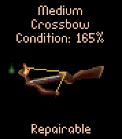
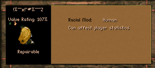

Note the innocent looking BAG above!
This is what it holds:
There are definitely two items here that call for closer inspection! What's that? A 165% Medium Crossbow, Poisoned and Flamed?! Can this be true?

Well, that's what it says ... But ....!
Let's give it to Gorath, anyway.
It's probably better than that fragile looking Elven Crossbow.
I wonder what will happen, if he needs to use it, though ...
And how about that yellow thingy? Is it some kind of Armor? Let's see:

Hmmm .... it's even got a name, although it's slightly difficult to pronounce!
Let's look at it through a magnifying glass ...